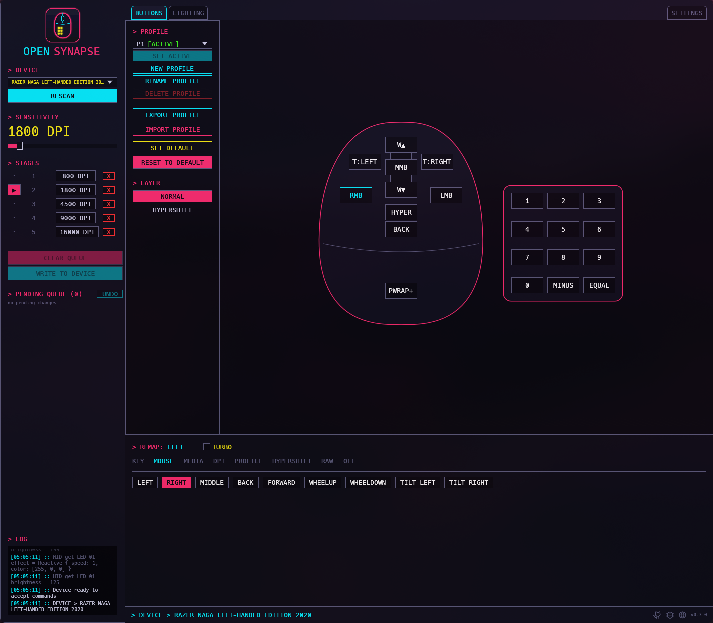
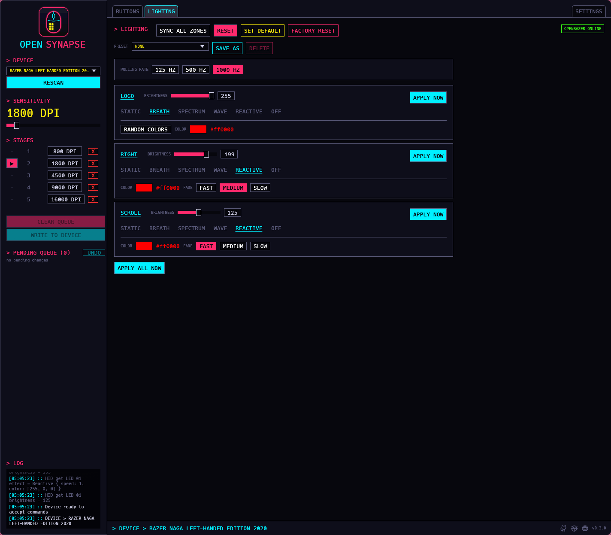

opensynapse
Remap buttons, set DPI and lighting on Razer mice from Linux.
Before you start
This is a work in progress. It works on my mouse and that's about it for now. Expect things to change, break and get renamed.
My lawyers say I have to write this so:
Not affiliated with, endorsed by, or supported by Razer Inc. Everything here is distributed as-is and with no warranty.
What is it
Razer doesn't ship Synapse for Linux, and my Naga's thumb grid was basically useless here. keyd and friends can remap what the mouse sends, but the remap lives on the computer, not on the mouse, and some things you just can't reach that way.
So I reverse engineered how the mouse stores its keymap (it's all HID feature reports, the details for the Naga are in devices/protocols/) and wrote this. It talks to the mouse directly, so the mapping is saved on the mouse itself and goes with it to any computer. There's a GUI and a CLI, both written in Rust.
Right now you can:
- Remap any button to a key (with modifiers), a mouse button, a mouse button on turbo, DPI up/down or nothing at all, on both the normal and the Hypershift layer
- Change DPI and the DPI stages
- Export and import profiles as JSON. The first time the GUI opens a mouse it backs up every profile on it to
~/.config/opensynapse/devices/<vid-pid>/<serial>-<profile>.json - See which button you're pressing, live, in the GUI
- Change the lighting of each zone (static, breath, spectrum, wave, reactive, off) and its brightness. This one goes through OpenRazer (install
openrazer-driver-dkmson Arch), so it works on any mouse OpenRazer supports, and if the OpenRazer daemon is running it remembers your colors like it does for its own apps
Lighting is still untested, so it may not work on your mouse yet.
In the GUI, changes are queued like in GParted and nothing touches the mouse until you hit WRITE TO DEVICE. CLI commands write right away.
Screenshots


Current status
1532:008d
That's the only supported mouse, because that's the one I have. The protocol is shared by a bunch of Razer mice, so adding another one should mostly be writing a JSONC file (see Add your mouse).
Things I still haven't figured out: turbo for keyboard keys, media keys like play/pause, and whether profile 0 survives unplugging the mouse.
Install
You need Rust and a Linux box. Then:
$ git clone https://github.com/khaosdoctor/opensynapse && cd opensynapse
$ cargo install --path . --features guiThat puts opensynapse (the CLI) and opensynapse-gui in ~/.cargo/bin. If you only want the CLI, drop the --features gui.
Your user also needs access to the mouse's raw HID device, otherwise you'll get a permission denied:
$ sudo install -m644 udev/70-opensynapse.rules /etc/udev/rules.d/
$ sudo udevadm control --reload && sudo udevadm triggerUsage
The GUI is the easy way, just run opensynapse-gui. For headless use there's the CLI:
opensynapse dump # every button and what it does
opensynapse set thumb1 key:ctrl+1 # remap a button
opensynapse set thumb2 key:f13 --layer hypershift
opensynapse dpi 1600
opensynapse stages 800 1600 3200 --active 2
opensynapse export my-profile.json
opensynapse watch # prints buttons as you press them
opensynapse rgb all static ff00aa # lighting, needs OpenRazer
opensynapse rgb scroll brightness 128
opensynapse init # start a device file for an unsupported mouse
opensynapse protocol # protocol file for your mouse, see PROTOCOL.md
opensynapse protocol send # share it as a GitHub issueopensynapse help has the rest.
Add your mouse
I need your help here. I only have one Razer mouse, so if you have another one, please add it.
Every mouse is a single JSONC file (JSON with comments) with its USB ids and the list of buttons. opensynapse init writes most of it for you to ~/.config/opensynapse/devices/<vid-pid>/buttons.jsonc by asking your mouse, without changing anything on it, and the finished ones go in devices/.
CONTRIBUTING.md has the step by step, and a prompt you can paste into Claude Code (or whatever agent you use) to do the whole thing with it, which is how I did the Naga.
AI usage
I used AI a lot on this, including for the reverse engineering part, and I checked everything against the real mouse, but there is probably something I missed. If you find it, open an issue.